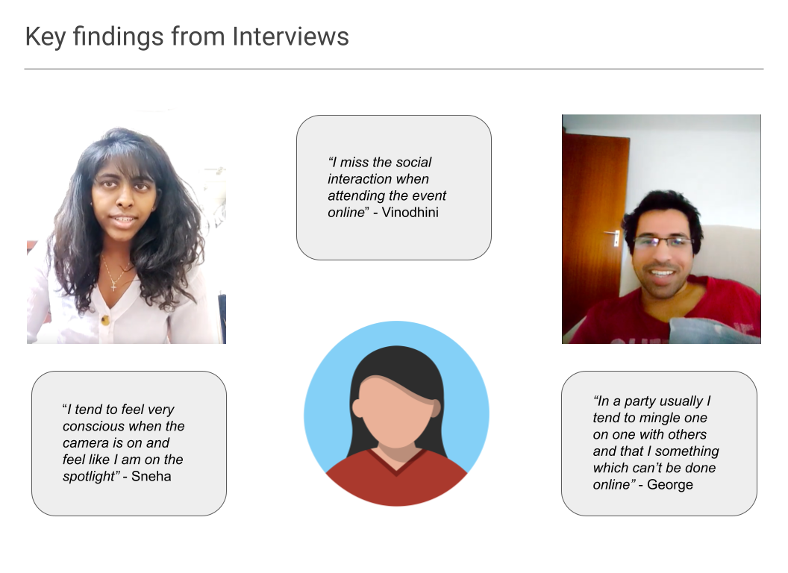
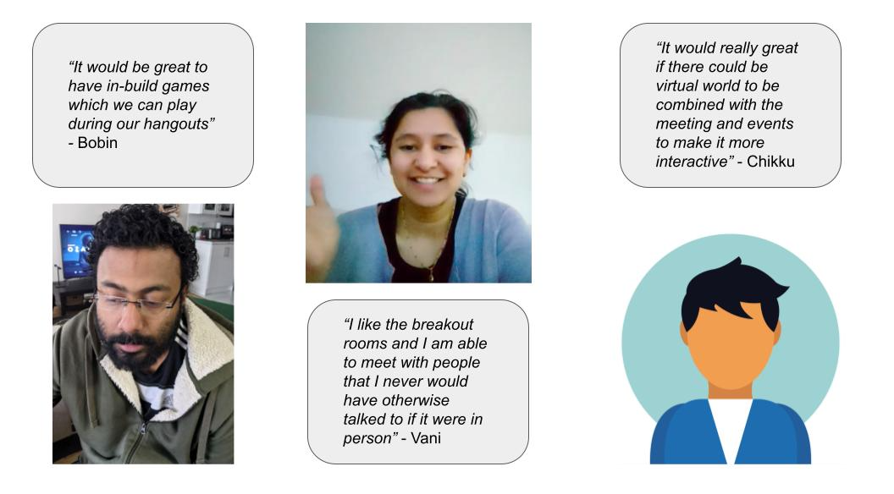
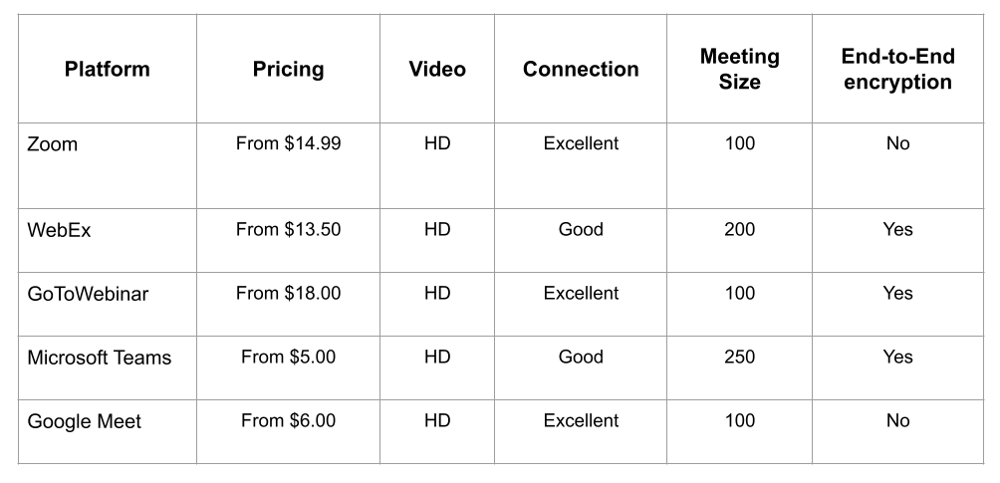
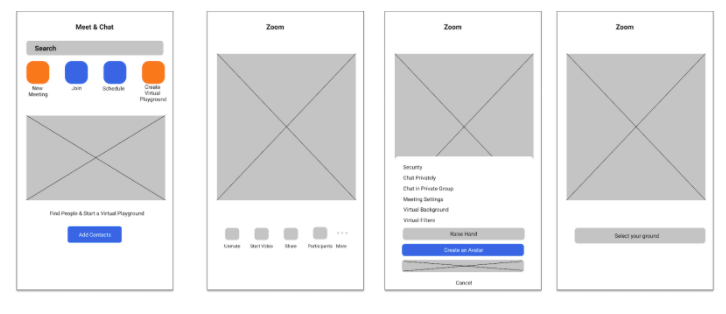

Zoom: Making virtual meeting more social.
The Opportunity
This is the project I did for the UX course I took at Juno College. The purpose of this project was to create a digital prototype, present research insights & findings, and presenting findings from usability testing.
The Problem
Professionals who work from home and are trying to achieve a work-life balance, want a more interactive space to interact with friends and family so that they can feel more mentally and socially connected at the end of their day.
Context
- Project Type — Individual
- Role — Research, Ideation, UI/UX
- Tools— Figma, Miro, Google Slides
- Timeline — May to July 2021
Research Phase
During the Research Phase extensive user interviews and study was done to understand the root cause of the why it was not easy to be conducting social events over virtual meetings.
User Interview
To gather information on how a user conducts their work and social life online it was important to understand their daily patterns and how they choose to interact with various platforms. A qualitative approach was deemed the best to gather enough information on participant interaction and their outlook on virtual meeting spaces.
The interview process was conducted both online and offline with users of various meeting platforms. Each candidate has also attended various events or activities online which made them suitable candidates.
Participants profile
The interview was divided into 4 main questions with sub-questions to gather more information on their roles and general outlook
- Number of persons interviewed - 6
- Age group - 26 to 35
- Work Type - Work from Home
Affinity Mapping
Empathy Map

User Interviews Findings
 - Users of the platform need a way to be able to interact more organically.
- Use of camera and audio usually tends to take up a lot more bandwidth which tend to make the calls choppy and drop offs become higher.
Similar Apps
- Google Meet
- WebEx
- GoToWebinar
- Microsoft Teams

Competitive Analysis
From here, we looked at the main competitors for Zoom to understand their workings and what they use to retain their users.
Develop Phase
Creating a WireFrame
Using my finding in interviews and I created a wireframe prototype on Figma of some additional features that would help address the key points of improvement.
Usability testing: Wireframe Prototype
I had an in-class useability test who took the first stab and was able to get a fair idea of what works and what I can do further.
I assigned them two tasks:
- Create a meeting, start a meeting room
- Chat privately with a group of people
Feedback
Pros: Saw create an avatar quickly, is interested in checking it out. Though that it is useful to be able to talk to more than 1 person privately.
Areas of Improvement: Can the user start meeting and then change type after? Option to select avatar in virtual playground screen, as well as additional options.
Others: Ability to select avatar in virtual playground screen, as well as additional options.
Key Take-Aways
I decided to retain the orange buttons for only new features, as the colour change drew users attention immediately.
Deliver Phase
Visual Design
Using the feedbacks during usability testing and findings from the user interviews I decided to try having 3 new features on the zoom main page
- Virtual playground
- Choose an Avatar
- Choose a filter
But while doing my second round of usability testing, I quickly realised that users were drawn to the playground feature, and they wanted to be able to access the avatar and filters while in the playground.
Hi-fidelity WireFrames
And thus I was able to reach my final prototype which includes the avatar and filters as features while in meeting or playground.
Click here to view Prototype

Conclusions & Final Remarks
I created a digital wireframe first to be able to understand how users would interact with the options available and what they are drawn to. This helped me to be able to narrow down to the aspects that I would like to focus on and the functionalities which seemed to interest users. Throughout this experience, I’ve learned that not everyone thinks the same. I also understood that something that might seem obvious to me might not appear the same to everyone. Some of my key findings were:
- Interactions help people feel less fatigued by being in online meetings. I was able to draw from the experiences of gamers who use interactions in the game environment to help them feel like they are part of something.
- Micro and organic interactions are very essential to users as this mimics a day to day social environment, rather than be forced to chat with an entire group vs a single user.
- Being on camera or being conscious of being seen all the time is quite draining on users and alternatives like avatars and filters will help to alleviate this.